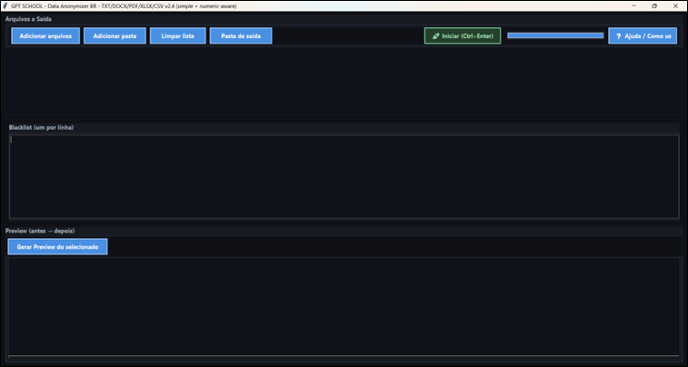

TXT • DOCX • PDF • XLSX • CSV • blacklist simples
R$ 147,00
Lançamento: R$ 97,00
Pagamento único • Garantia 7 dias
Proteja dados sensíveis dos seus arquivos em poucos cliques
O Anonimizador BR foi criado para quem precisa compartilhar documentos e planilhas sem expor informações sensíveis. Copie do arquivo original, cole na blacklist e gere uma nova cópia anonimizada, sem alterar o arquivo de origem.
- Anonimiza TXT, DOCX, PDF, XLSX e CSV
- Abre já maximizado após a splash
- Ao concluir, abre automaticamente o arquivo anonimizado
- O original permanece intacto
Copiar do arquivo original
▶
Colar na blacklist
▶
Gerar cópia anonimizada
Simples, direto e pensado para rotina profissional.

Tela inicial do programa: interface objetiva, botão de iniciar visível, blacklist centralizada
e preview antes/depois para conferência.